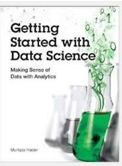

Course Text Book: ‘Getting Started with Data Science’ Publisher: IBM Press; 1 edition (Dec 13 2015) Print.
Author: Murtaza Haider

Prescribed Reading: Chapter 3 Pg. 60-62
Before starting the analysis, think about the structure of the report. Will it be a brief report of five or fewer pages, or will it be a longer document running more than 100 pages in length? The structure of the report depends on the length of the document. A brief report is more to the point and presents a summary of key findings. A detailed report incrementally builds the argument and contains details about other relevant works, research methodology, data sources, and intermediate findings along with the main results.
I have reviewed reports by leading consultants including Deloitte and McKinsey. I found that the length of the reports varied depending largely on the purpose of the report. Brief reports were drafted as commentaries on current trends and developments that attracted public or media attention. Detailed and comprehensive reports offered a critical review of the subject matter with extensive data analysis and commentary. Often, detailed reports collected new data or interviewed industry experts to answer the research questions.
Even if you expect the report to be brief, sporting five or fewer pages, I recommend that the deliverable follow a prescribed format including the cover page, table of contents, executive summary, detailed contents, acknowledgments, references, and appendices (if needed).
I often find the cover page to be missing in documents. It is not the inexperience of undergraduate students that is reflected in submissions that usually miss the cover page. In fact, doctoral candidates also require an explicit reminder to include an informative cover page. I hasten to mention that the business world sleuths are hardly any better. Just search the Internet for reports and you will find plenty of reports from reputed firms that are missing the cover page.
At a minimum, the cover page should include the title of the report, names of authors, their affiliations, and contacts, the name of the institutional publisher (if any), and the date of publication. I have seen numerous reports missing the date of publication, making it impossible to cite them without the year and month of publication. Also, from a business point of view, authors should make it easier for the reader to reach out to them. Having contact details at the front makes the task easier.
"A table of contents (ToC)" is like a map needed for a trip never taken before. You need to have a sense of the journey before embarking on it. A map provides a visual proxy for the actual travel with details about the landmarks that you will pass by in your trip. The ToC with main headings and lists of tables and figures offers a glimpse of what lies ahead in the document. Never shy away from including a ToC, especially if your document, excluding cover page, table of contents, and references, is five or more pages in length.
Even for a short document, I recommend an "abstract" or an "executive summary". Nothing is more powerful than explaining the crux of your arguments in three paragraphs or less. Of course, for larger documents running a few hundred pages, the executive summary could be longer. An "introductory section" is always helpful in setting up the problem for the reader who might be new to the topic and who might need to be gently introduced to the subject matter before being immersed in intricate details. A good follow-up to the introductory section is a review of available relevant research on the subject matter. The length of the literature review section depends upon how contested the subject matter is. In instances where the vast majority of researchers have concluded in one direction, the literature review could be brief with citations for only the most influential authors on the subject. On the other hand, if the arguments are more nuanced with caveats aplenty, then you must cite the relevant research to offer adequate context before you embark on your analysis. You might use the literature review to highlight gaps in the existing knowledge, which your analysis will try to fill. This is where you formally introduce your research questions and hypothesis.
In the "methodology" section, you introduce the research methods and data sources you used for the analysis. If you have collected new data, explain the data collection exercise in some detail. You will refer to the literature review to bolster your choice for variables, data, and methods and how they will help you answer your research questions.
The results section is where you present your empirical findings. Starting with descriptive statistics (see Chapter 4, "Serving Tables") and illustrative graphics (see Chapter S, "Graphic Details" for plots and Chapter 10, "Spatial Data Analytics" for maps), you will move toward formally testing your hypothesis (see Chapter 6, "Hypothetically Speaking").
In case you need to run statistical models, you might turn to regression models (see Chapter 7, "Why Tall Parents Don't Have Even Taller Children") or categorical analysis (see Chapters 8, "To Be or Not to Be" and 2., "Categorically Speaking About Categorical Data"). If you are working with time-series data, you can turn to Chapter 11, Doing Serious Time with Time Series. You can also report results from other empirical techniques that fall under the general rubric of data mining (see Chapter 12, "Data Mining for Gold"). Note that many reports in the business sector present results in a more palatable fashion by holding back the statistical details and relying on illustrative graphics to summarize the results.
The results section is followed by the discussion section, where you craft your main arguments by building on the results you have presented earlier.
The "discussion section" is where you rely on the power of narrative to enable numbers to communicate your thesis to your readers. You refer the reader to the research question and the knowledge gaps you identified earlier. You highlight how your findings provide the ultimate missing piece to the puzzle.
Of course, not all analytics return a smoking gun. At times, more frequently than I would like to acknowledge, the results provide only a partial answer to the question and that, too, with a long list of caveats.
In the "conclusion" section, you generalize your specific findings and take on a rather marketing approach to promote your findings so that the reader does not remain stuck in the caveats that you have voluntarily outlined earlier. You might also identify future possible developments in research and applications that could result from your research. What remains is housekeeping, including a list of references, the acknowledgment section (acknowledging the support of those who have enabled your work is always good), and "appendices", if needed.
As a data scientist, you are expected to do thorough analysis with the appropriate data, deploying the appropriate tools. As a writer, you are responsible for communicating your findings to the readers. Transport Policy, a leading research publication in transportation planning, offers a checklist for authors interested in publishing with the journal. The checklist is a series of questions authors are expected to consider before submitting their manuscripts to the journal. I believe the checklist is useful for budding data scientists and, therefore, I have reproduced it verbatim for their benefit.
Have you told readers, at the outset, what they might gain by reading your paper?
Have you made the aim of your work clear?
Have you explained the significance of your contribution?
Have you set your work in the appropriate context by giving sufficient background (including a complete set of relevant references) to your work?
Have you addressed the question of practicality and usefulness?
Have you identified future developments that might result from your work?
Have you structured your paper in a clear and logical fashion?